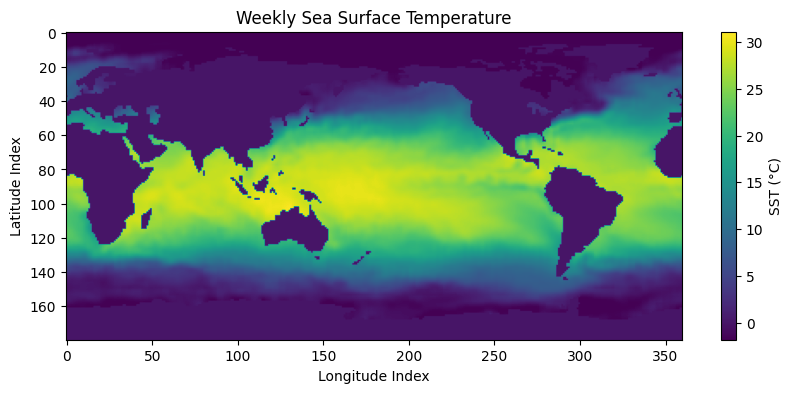
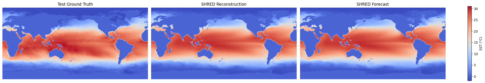

Tutorial: Bunny Hill#

This iPython notebook gives an absolute-beginners tutorial on using PySHRED. The dataset we consider is weekly mean sea-surface temperature as given by the NOAA Optimum Interpolation SST V2 dataset.
🌊 Loading sea surface temperature (SST) data#
Download the weekly mean sea-surface temperature (SST) dataset from NOAA here.
Download the land sea mask dataset from NOAA here
Place the two downloaded
.ncfiles in the same directory as this notebook.Run the code below to load the SST data, apply the land–sea mask, and extract a clean NumPy array.
import xarray as xr # for loading NetCDF files
import numpy as np
# Load SST and land-sea mask datasets
sst_dataset = xr.open_dataset('sst.wkmean.1990-present.nc')
mask_dataset = xr.open_dataset("lsmask.nc")
# Extract raw SST values and land-sea mask
data = sst_dataset["sst"].values
mask = np.squeeze(mask_dataset["mask"].values)
# Apply land-sea mask: set land regions (mask == 0) to 0
data[:,mask == 0] = 0
Understanding and visualizing SST Data#
The data variable is a 3D NumPy array containing weekly sea surface temperature values.
axis 0: weekly timestep (timesteps)
axis 1: latitude (180 grid points)
axis 2: longitude (360 grid points)
Each slice data[t] is a 2D array representing global SST for week t.
# Print the shape of the array and plot the SST map for the first available week.
import matplotlib.pyplot as plt
# Print shape of SST data
print("Shape of SST data:", data.shape) # (time, lat, lon)
# Plot the first week's SST values
plt.figure(figsize=(10, 4))
plt.imshow(data[0])
plt.colorbar(label='SST (°C)')
plt.title("Weekly Sea Surface Temperature")
plt.xlabel("Longitude Index")
plt.ylabel("Latitude Index")
plt.show()
Shape of SST data: (1727, 180, 360)

Initialize the data manager#
The DataManager handles preprocessing and splitting of your dataset into training, validation, and test sets.
from pyshred import DataManager, SHRED, SHREDEngine
manager = DataManager(
lags=52, # 1 year of weekly history as input
train_size=0.8, # 80% for training
val_size=0.1, # 10% for validation
test_size=0.1 # 10% for testing
)
Add datasets to data manager#
The DataManager provides an add_data() method for registering datasets to be used with SHRED.
manager.add_data(
data=data, # 3D array (time, lat, lon); time must be on axis 0
id="SST", # Unique identifier for the dataset
random=3, # Randomly select 3 sensor locations
compress=False # Keep original spatial resolution (no compression)
)
Data manager attributes#
The DataManager exposes several useful attributes to inspect the sensor configuration and measurements.
sensor_summary_df: a DataFrame summarizing metadata for each sensorsensor_measurements_df: a time-indexed Dataframe containing the raw sensor measurements for all selected sensors.
manager.sensor_summary_df
| data id | sensor_number | type | loc/traj | |
|---|---|---|---|---|
| 0 | SST | 0 | stationary (random) | (102, 22) |
| 1 | SST | 1 | stationary (random) | (129, 78) |
| 2 | SST | 2 | stationary (random) | (99, 281) |
manager.sensor_measurements_df
| SST-0 | SST-1 | SST-2 | |
|---|---|---|---|
| 0 | 0.0 | 14.700000 | 20.650000 |
| 1 | 0.0 | 14.809999 | 21.049999 |
| 2 | 0.0 | 14.469999 | 21.410000 |
| 3 | 0.0 | 15.750000 | 20.820000 |
| 4 | 0.0 | 16.299999 | 20.859999 |
| ... | ... | ... | ... |
| 1722 | 0.0 | 15.549999 | 20.480000 |
| 1723 | 0.0 | 15.950000 | 20.559999 |
| 1724 | 0.0 | 17.170000 | 21.139999 |
| 1725 | 0.0 | 17.379999 | 21.590000 |
| 1726 | 0.0 | 18.879999 | 21.900000 |
1727 rows × 3 columns
Generate train, validation, and test set#
The DataManager provides a .prepare() method for generating the train, validation, and test set for SHRED.
Run the code below to generate train, validation, and test sets.
train_dataset, val_dataset, test_dataset= manager.prepare()
Initialize SHRED#
The SHRED architecture is composed of three core modules:
sequence_model: Encodes temporal patterns in the sensor measurementsdecoder_model: Reconstructs the full system state from the latent representationlatent_forecaster: Predicts future latent states from current ones
The simplest way to initialize SHRED is by passing preset model names as strings for each component. Below we use the default pairing that performs well across many datasets.
shred = SHRED(
sequence_model="LSTM",
decoder_model="MLP",
latent_forecaster="LSTM_Forecaster"
)
Fit SHRED#
The SHRED object provides a .fit() method for training the shred model using the training and validation datasets. It returns a list of validation errors (MSE) recorded after each epoch.
val_errors = shred.fit(
train_dataset=train_dataset,
val_dataset=val_dataset,
num_epochs=2,
verbose=False
)
print('val_errors:', val_errors)
Fitting SHRED...
val_errors: [0.04347949 0.03559002]
Evaluate SHRED#
The SHRED object provides an .evaluate() method that computes the mean squared error (MSE) between the model’s reconstruction and the target values in a given dataset.
This is useful for monitoring training progress or for comparing performance across different SHRED models.
Note: The target in this evaluation is not the raw ground truth. Instead, it reflects the target produced by the DataManager after preprocessing (e.g. compression, stacking datasets, scaling).
If you want to compare reconstructions directly against the full-resolution ground truth, use the SHREDEngine’s evaluate() method, as described later in this tutorial.
train_mse = shred.evaluate(dataset=train_dataset)
val_mse = shred.evaluate(dataset=val_dataset)
test_mse = shred.evaluate(dataset=test_dataset)
print(f"Train MSE: {train_mse:.3f}")
print(f"Val MSE: {val_mse:.3f}")
print(f"Test MSE: {test_mse:.3f}")
Train MSE: 0.033
Val MSE: 0.036
Test MSE: 0.033
Initialize SHRED engine for downstream tasks#
The SHREDEngine object wraps the trained SHRED model and the associated DataManager, providing a simple interface for performing downstream sensing tasks such as:
generating latent space states from sensor measurements
forecasting future latent space states
decoding latent space to full-state space
evaluating full-state reconstructions from sensor measurements against the ground-truth
engine = SHREDEngine(manager, shred)
Generate latent space states from sensor measurements#
The SHREDEngine object provides a .sensor_to_latent() method for generating the latent space associated with the raw sensor measurements.
# obtain latent space of test sensor measurements
test_latent_from_sensors = engine.sensor_to_latent(manager.test_sensor_measurements)
Forecast future latent space states#
The SHREDEngine provides a .forecast_latent() method that predicts future latent states starting from an initial sequence of latent vectors.
# generate latent states from validation sensor measurements
val_latents = engine.sensor_to_latent(manager.val_sensor_measurements)
# seed the forecaster with the final `seed_length` latent states from validation
init_latents = val_latents[-shred.latent_forecaster.seed_length:] # seed forecaster with final lag timesteps of latent space from val
# set forecast horizon to match the length of the test dataset
h = len(manager.test_sensor_measurements)
# forecast latent states for the test horizon
test_latent_from_forecaster = engine.forecast_latent(h=h, init_latents=init_latents)
Decode Latent Space to Full-State Space#
The SHREDEngine provides a .decode() method for converting latent representations back into the full-state space.
# decode latent space generated from sensor measurements (generated using engine.sensor_to_latent())
test_reconstruction = engine.decode(test_latent_from_sensors)
# decode latent space generated by the latent forecaster (generated using engine.forecast_latent())
test_forecast = engine.decode(test_latent_from_forecaster)
Evaluate MSE on Ground Truth Data#
The SHREDEngine provides an .evaluate() method that compares reconstructed full-state outputs (from sensor measurements) against the unprocessed ground truth. This includes:
unscaling the predictions
project back to full-state space (if compression is used)
unstacking multiple datasets if more than one was added
# ---------------- Train Evaluation ----------------
t_train = len(manager.train_sensor_measurements)
train_Y = {"SST": data[0:t_train]} # Ground truth segment
train_error = engine.evaluate(manager.train_sensor_measurements, train_Y)
# ---------------- Validation Evaluation ----------------
t_val = len(manager.val_sensor_measurements)
val_Y = {"SST": data[t_train:t_train + t_val]}
val_error = engine.evaluate(manager.val_sensor_measurements, val_Y)
# ---------------- Test Evaluation ----------------
t_test = len(manager.test_sensor_measurements)
test_Y = {"SST": data[-t_test:]}
test_error = engine.evaluate(manager.test_sensor_measurements, test_Y)
# ---------------- Print Results ----------------
print("---------- TRAIN ----------")
print(train_error)
print("\n---------- VALIDATION ----------")
print(val_error)
print("\n---------- TEST ----------")
print(test_error)
---------- TRAIN ----------
MSE RMSE MAE R2
dataset
SST 2.571972 1.603737 0.940529 -0.010622
---------- VALIDATION ----------
MSE RMSE MAE R2
dataset
SST 2.856155 1.690016 0.978884 -5.246062e+06
---------- TEST ----------
MSE RMSE MAE R2
dataset
SST 2.696861 1.642212 0.948656 -3.597258e+07
Visualize Results#
Below we compare the final frame of the test ground truth, the reconstruction from sensor measurements, and the forecast from the latent forecaster.
import matplotlib.pyplot as plt
import numpy as np
# Final ground truth frame from the test set
truth = data[-1]
# Extract final reconstructed frame (from sensor-based latents)
reconstructions = test_reconstruction["SST"]
reconstruction = reconstructions[h - 1]
# Extract final forecasted frame (from forecasted latents)
forecasts = test_forecast["SST"]
forecast = forecasts[h - 1]
# Collect data and labels for visualization
compare_data = [truth, reconstruction, forecast]
titles = ["Test Ground Truth", "SHRED Reconstruction", "SHRED Forecast"]
# Set shared color scale based on overall data range
vmin = np.min([d.min() for d in compare_data])
vmax = np.max([d.max() for d in compare_data])
# Create side-by-side comparison plot
fig, axes = plt.subplots(1, 3, figsize=(20, 4), constrained_layout=True)
for ax, d, title in zip(axes, compare_data, titles):
im = ax.imshow(d, vmin=vmin, vmax=vmax, cmap='coolwarm')
ax.set_title(title)
ax.axis("off")
# Add shared colorbar
fig.colorbar(im, ax=axes, orientation='vertical', label="SST (°C)", shrink=0.8)
plt.show()
